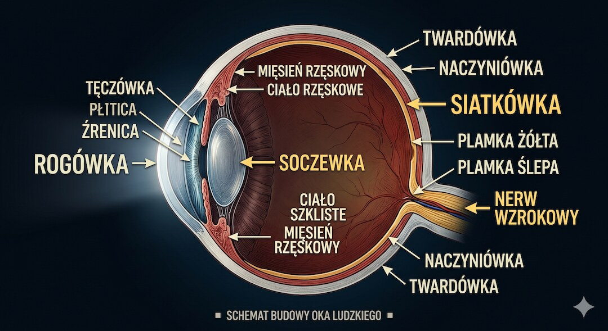
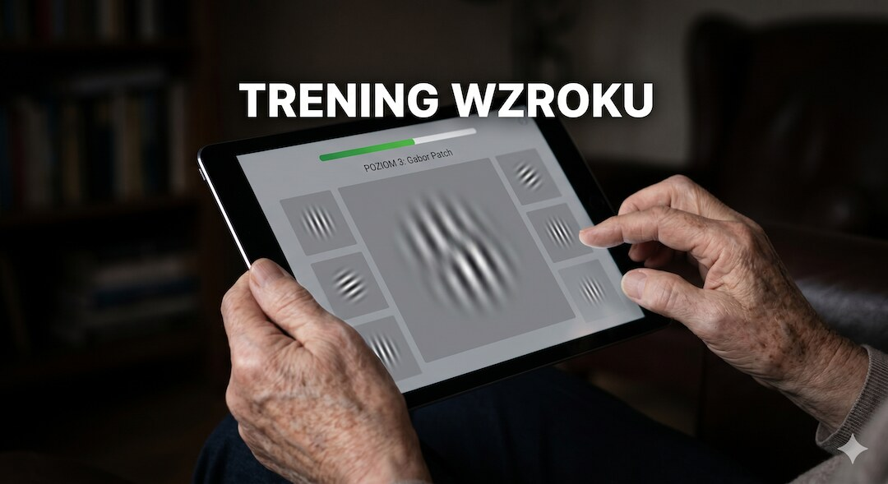
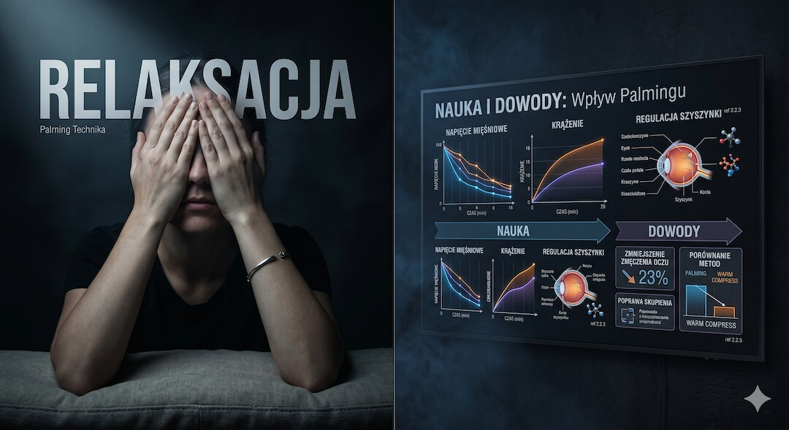
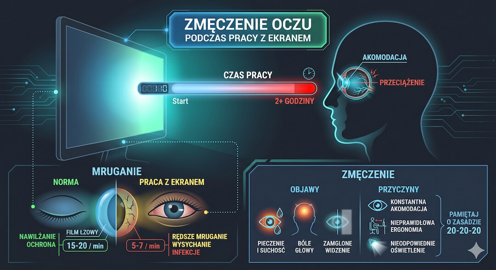
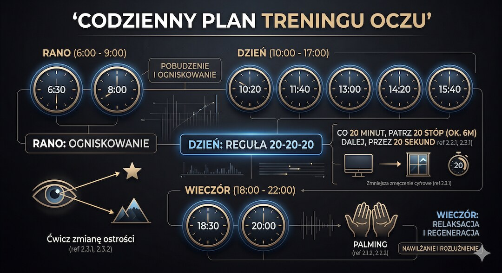

Po czterdziestce oko zaczyna tracić zdolność ostrego widzenia z bliska. Wielu ludzi zakłada okulary i uznaje sprawę za zamkniętą. Tymczasem nauka o neuroplastyczności mózgu i badania nad treningiem wzroku dają nowe odpowiedzi. Czy ćwiczenia akomodacji mogą opóźnić konieczność noszenia szkieł? Sprawdzamy, co naprawdę działa, a co to tylko marketingowy mit.
Szybka odpowiedź
Trening akomodacji może poprawić komfort widzenia po 50-tce, ale nie cofa w pełni prezbiopii i nie zastępuje korekcji. Najczęściej sprawdza się 10-15 minut ćwiczeń dziennie przez 6-8 tygodni. Jeśli pojawia się ból głowy, zamglenie lub zawroty, zmniejsz intensywność i skonsultuj plan z okulistą.
Kluczowe wnioski
Kluczowe wnioski
- Prezbiopia to twardnienie soczewki, którego nie cofną ćwiczenia, ale trening poprawia interpretację obrazu przez mózg.
- Metoda łatek Gabora to obecnie jedyna technika treningu wzroku z silnym potwierdzeniem w badaniach klinicznych.
- Neuroplastyczność kory wzrokowej pozwala wyostrzyć obraz nawet przy fizycznych ograniczeniach oka po 50-tce.
- Regularne przerwy od ekranów (reguła 20-20-20) są kluczowe dla zachowania elastyczności mięśnia rzęskowego.
Prezbiopia: co się dzieje w oku po czterdziestce?
Prezbiopia dotyka praktycznie każdego człowieka po czterdziestce. Nie jest chorobą, lecz naturalnym procesem starzenia soczewki oka: traci ona elastyczność i coraz trudniej jej zmieniać kształt podczas skupiania na bliskich przedmiotach. Drobny druk zaczyna się rozmywać, a ramię instynktownie wysuwa gazetę coraz dalej. Ten mechanizm ma biologiczne przyczyny, ale wiele o codziennej adaptacji opisujemy także w dziale Zdrowie.
Za akomodację odpowiada mięsień rzęskowy, który przez całe życie zmienia napięcie na włóknach zawieszeniowych soczewki. W okolicach czterdziestki soczewka twardnieje na tyle, że nawet przy pełnym skurczu mięśnia rzęskowego nie jest już w stanie wystarczająco zmienić swojej krzywizny. Efektem jest trudność z ostrym widzeniem poniżej około 40 cm. Szacuje się, że w 2050 roku problem ten dotyczyć będzie ponad 1,8 miliarda ludzi na świecie.

Neuroplastyczność i wzrok: czy mózg uczy się widzieć na nowo?
Przez dekady uważano, że mózg dorosłego człowieka jest zamrożony. To nieprawda. Badania neurobiologiczne potwierdzają, że mózg zachowuje zdolność przeorganizowania swoich połączeń przez całe życie. Ten proces, neuroplastyczność, ma znaczenie nie tylko w kontekście odmładzania komórek, o czym pisaliśmy w artykule o wpływie treningu siłowego na biologiczne starzenie, lecz także w kontekście treningu widzenia.
Kora wzrokowa reaguje na powtarzające się bodźce. Gdy regularnie konfrontujemy ją z określonymi wzorcami, uczy się je rozpoznawać z większą precyzją. W praktyce część trudności z widzeniem wynika nie tylko z fizyki oka, lecz też z tego, jak mózg interpretuje rozmazany obraz. Tu właśnie pojawia się przestrzeń dla celowanego treningu. Jeśli chcesz zobaczyć, jak szybkie ruchy oczu wpływają na obraz, sprawdź też sakady i supresję sakadyczną.
Ćwiczenia akomodacji: co mówią badania kliniczne?
Naukowcy pod kierunkiem prof. Uri Polata udowodnili, że uczestnicy po czterdziestce trenujący wzrok za pomocą tzw. łatek Gabora (sinusoidalnych wzorów o niskim kontraście), po kilku tygodniach czytali bez okularów lub przy znacznie słabszym szkle. Efekt utrzymywał się przez miesiące po zakończeniu treningu.
Innym podejściem jest technika zmiany ogniskowania. Polega na naprzemiennym skupianiu wzroku na obiekcie bliskim (20 cm) i dalekim (powyżej 3 m). Mięsień rzęskowy wykonuje pracę podobną do treningu mobilności, który omawiamy w planach Rusz się po 50-tce: wielokrotnie napina się i rozluźnia, co utrzymuje jego sprawność.
- Łatki Gabora : Plansze z pasiastymi wzorami, jedyna metoda z potwierdzoną poprawą widzenia u dorosłych.
- Zmiana ogniskowania : 5-10 minut dziennie naprzemiennego skupiania wzroku blisko/daleko.
- Reguła 20-20-20 : Co 20 minut pracy przy ekranie, 20 sekund patrzenia na obiekt oddalony o 6 metrów.
- Świadome mruganie : Zapobieganie wysychaniu oka, które nasila rozmycie obrazu.

Metoda Bates'a i joga oczu: jak oddzielić fakty od mitów?
Metoda Bates'a zyskała miliony zwolenników, lecz do dziś nie przeszła rygorystycznych prób klinicznych. Mechanizm opisany przez Batesa jest niezgodny z anatomią oka. Relaksacja mięśni oka jest ważna, ale nie koryguje wady refrakcji. Podobnie jak podstawowe markery krwi wymagają rzetelnej interpretacji, tak i metody treningu wzroku muszą być oparte na dowodach, a nie na obietnicach cudownego uleczenia.
Problem pojawia się, gdy producenci kursów obiecują całkowite wyleczenie prezbiopii za kilkaset złotych. Takie obietnice są nieuczciwe. Relaksacja (np. palmowanie) pomaga na zmęczenie, ale nie zastępuje profesjonalnej korekcji optycznej, gdy soczewka staje się sztywna.

Cyfrowy styl życia: czy przyspiesza postęp prezbiopii?
Przeciętny Polak po 50-tce spędza przed ekranami ponad 7 godzin dziennie. Długotrwałe skupienie wzroku w odległości 50 cm wymusza stałą akomodację w jednej płaszczyźnie. Mięsień rzęskowy pracuje w wąskim zakresie, co prawdopodobnie przyspiesza subiektywne pogorszenie wzroku. Ekrany ograniczają też mruganie do 5-7 razy na minutę, powodując syndrom suchego oka.
Największą poprawę przynosi konsekwencja: krótkie przerwy co kilkadziesiąt minut, regularne mruganie i codzienny kontakt wzroku z dalekim punktem.

Okulary to narzędzie, a nie wyrok?
Okulary do czytania nie osłabiają wzroku. To jeden z najtrwalszych mitów medycznych. Oko nie staje się leniwe od pomocy optycznej. Właściwie dobrana korekcja przez optometrystę zmniejsza chroniczne zmęczenie oczu i bóle głowy. Kupowanie gotowych okularów +1. 0 w aptece jest dopuszczalne doraźnie, ale nie zastępuje profesjonalnego badania dna oka.
Najrozsądniejsze podejście to połączenie dobrej korekcji z prostym treningiem nawyków wzrokowych, dzięki czemu oczy męczą się wyraźnie wolniej.
Plan działania: jak wykorzystać 10 minut dla Twoich oczu?
Nie zatrzymasz czasu, ale możesz zadbać o sprawność procesowania obrazu. Kluczem jest konsekwencja. Poniżej prosty plan, który możesz wdrożyć od zaraz, aby utrzymać swoje oczy w najlepszej możliwej formie mimo upływu lat. roku życia.
Jeśli chcesz utrzymać efekt, zaplanuj ćwiczenia jak higienę zębów: codziennie, krótko i o stałej porze, bez czekania na pogorszenie ostrości.
- Rano : 10 powtórzeń zmiany ogniskowania (palec vs. widok za oknem).
- W pracy : Aktywna reguła 20-20-20 (ustaw przypomnienie w telefonie).
- Wieczorem : 5 minut palmingu (relaksacji) przed snem.
- Weekend : Długie spacery bez patrzenia w telefon – daj oczom odpocząć w nieskończoności.

Zobacz też:trening siłowy, dieta po 50-tce, sen i regeneracja oraz badania krwi.
Najczęściej zadawane pytania
Najczęściej zadawane pytania
Czy ćwiczenia wzroku mogą zastąpić okulary do czytania?
Nie mogą zastąpić okularów, ale mogą opóźnić moment, w którym korekcja staje się konieczna, i zmniejszyć jej wymaganą moc. Trening wzrokowy działa na poziomie przetwarzania sygnału przez mózg, nie odwraca fizycznego stwardnienia soczewki.
Zobacz też:ai w medycynie czy naprawde pomaga pacjentom fakty badania, apob apoa badania cholesterol, badania po 50, bieganie niszczy kolana.
Powiązane tematy: trening siłowy, dieta po 50-tce, sen i regeneracja, suplementacja.
Powiązane tematy: trening siłowy, dieta po 50-tce, sen i regeneracja, suplementacja.
Jak technicznie mózg poprawia widzenie w treningu łatek Gabora?
W praktyce działa to tak: podczas ćwiczeń z łatkami Gabora mózg wielokrotnie porównuje bardzo podobne wzory (jaśniejsze, ciemniejsze, bardziej lub mniej ostre). Z czasem neurony w korze wzrokowej uczą się szybciej wychwytywać drobne różnice kontrastu, dzięki czemu obraz wydaje się wyraźniejszy i łatwiej utrzymać ostrość przy czytaniu. To nazywamy uczeniem percepcyjnym.
Najprościej: nie „naprawiamy” soczewki, tylko trenujemy sposób, w jaki mózg interpretuje sygnał z oka.
Czy noszenie okularów pogarsza wzrok?
Nie. To mit bez podstaw naukowych. Właściwie dobrana korekcja nie osłabia mięśni oka ani nie przyspiesza postępu prezbiopii. Noszenie zbyt słabych szkieł zwiększa natomiast zmęczenie wzroku.
Od kiedy warto zacząć ćwiczenia akomodacji?
Najlepiej przed pojawieniem się wyraźnych objawów, czyli już w okolicach czterdziestego roku życia. Profilaktyczne ćwiczenia zmiany ogniskowania są korzystne niezależnie od stadium prezbiopii.
Ćwiczenia oczu mają sens tylko jako mały element sprawności. Jeśli chcesz budować większą rezerwę ruchową po 50-tce, zacznij od Centrum Treningu Siłowego po 50-tce.
Źródła
Źródła po 50-tce warto wdrażać krok po kroku i od razu łączyć teorię z praktyką. Dzięki temu łatwiej utrzymać regularność, poprawić bezpieczeństwo działań i szybciej zauważyć trwałe efekty zdrowotne w codziennym życiu.
- Ophthalmology 2018 — Global prevalence of presbyopia
- PNAS 2004 — Improving vision in adult amblyopia
- Vision Research 2009 — Perceptual learning practical
- Clin Exp Optom 2008 — The eye in focus: accommodation
- Ophthalmic Physiol Opt 2011 — Computer vision syndrome
- WHO — World Report on Vision 2019
Uwaga: Artykuł ma charakter informacyjny i edukacyjny. Nie zastępuje konsultacji lekarskiej, diagnozy ani leczenia.